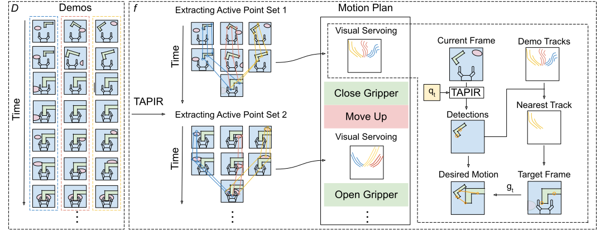

RoboTAP solves stencil insertion (and many other tasks) from 6
demonstrations or less, without CAD models or prior experience with the objects. It does
this by using DeepMind's novel point tracking algorithm TAPIR. At every moment,
it detects points on objects which matter most to the action (red), infers where those points
should move to (cyan), and computes an action that moves them there (orange arrow).
Abstract
For robots to be useful outside labs and specialised factories we need to be able to teach them new useful behaviors
quickly. Current approaches lack either the generality to onboard new tasks without task-specific
engineering, or else lack the data-efficiency to do so in an amount of time that enables practical use. In
this work we explore dense tracking as a representational vehicle to allow faster and more general
learning from demonstration. Our approach utilizes Track-Any-Point (TAP) models to isolate the relevant
motion in a demonstration, and parameterize a low-level controller to reproduce this motion across changes
in the scene. We show this results in robust robot policies that can solve complex object-arrangement
tasks such as shape-matching, stacking, and even full path-following tasks such as applying glue and
sticking objects together, all from demonstrations that can be collected in minutes.
Video Summary
Example Task Illustrations
Here we show the example tasks that we tackled with RoboTAP. For each task, the system only saw 4-6 demonstrations of the behavior; outside of these demonstrations, the relevant objects have never been seen before. Click the icons on the bottom to see different examples of the robot at work.
Javascript required.
Select a task for more information.
The RoboTAP Approach
What makes RoboTAP different from other robotics algorithms is that it uses TAP, and specifically the state-of-the-art TAPIR model, as the core of its spatial understanding. We show that this model can provide sufficient pose estimation, and even segmentation, for novel objects.
RoboTAP begins with a set of demonstrations. For the stencil task, a demonstration looks like this. Note that the user is positioning the robot by pushing it (so-called “kinesthetic teaching”). This contrasts with many imitation learning algorithms like behavioral cloning, which require access to the control signals that produce the action.
Given these demonstrations, RoboTAP automatically breaks the action down into stages, and extract a set of active points that determine the motion for each stage. For the stencil task, we have a total of 8 stages: four stages where points on the successive blocks are “active” (i.e., the robot reaches toward the object), and another four stages where the points on the stencil are “active” (i.e., stages where the robot must place each object at a specific location relative to the stencil).
The stages come from gripper actions (we assume that closing or opening the gripper marks the start of a new stage).
Then we track a few thousand randomly-selected points using TAPIR, across all demos, and then select the points which are relevant for each stage.
Specifically, within each stage, RoboTAP selects TAPIR points which all arrive at the same location at the end of the segment, suggesting that the user's goal is to place the object at a specific location.
Here's the “active points” for the stencil task. Each point is tracked automatically by TAPIR.
In order to produce clean active point sets that track the relevant object even under noise and occlusion, we find it's helpful to perform motion-based unsupervised object discovery. That is, we break the scene down into a set of “objects” that can move independently and explain the point motion as well as possible. This problem has classically proved challenging in the computer vision literature, but with strong point tracking from TAPIR (and, in particular, its very low rate of false positives), it becomes feasible. Here's a set of objects automatically discovered from the stencil demonstrations:
Given a set of active points for each stage of the demo, we next construct a “motion plan” which defines the full behavior. Note that the motion plan simply consists of a set of ”active points,“ the paths they followed during the demonstrations, as well as gripper actions at the end of each stage. Therefore, the inferred behavior can be easily understood and potentially even edited if desired, although we made no edits for the behaviors shown in this paper.

Given the motion plan, RoboTAP can run on the robot by imitating each stage using standard visual servoing. That is, we compute an approximate Jacobian of the motion of the points with respect to gripper motions, and execute actions which bring the points toward the trajectories seen in the demos. Here's an example of the full behavior executed on the robot (5x speed):
The left video shows the third-person view. The middle video shows motion at inference time overlayed over the closest demo for each stage.
The “active points” relevant to each stage are shown in red, and goal locations
extracted from the demos are shown cyan. The third video illustrates the desired motion: the visual servoing produces a 4D (x, y, z, rz) robot action which moves each point in the direction indicated by the blue lines, therefore moving toward the trajectory seen in the demos.
RoboTAP can already solve a wide variety of tasks, including many that are analogous to the precise and repetitive tasks common in industrial settings. However, there are also limitations. For one, the system is purely visual and does not incorporate force feedback. Furthermore, it is not designed to dynamically compose skills if the task needs to be done in a different order than what was seen in the demonstrations.
During our experiments we have also observed a few specific factors which caused failures.
First of all our approach implicitly assumes that the important object can be identified.
This assumption is not true if there are very similar objects on the scene or the important object becomes occluded.
A less obvious reason why this can happen is when the gripper moves too far from the object and not enough points can be correctly matched.
Finally our approach can fail due to collisions as it does not have a mechanism to avoid unexpected objects.
We show examples of these in the following videos.
Javascript Required
To summarize, we have presented RoboTAP: a manipulation system that can solve novel visuomotor tasks from just a few minutes of robot interaction.
We believe that capabilities presented within RoboTAP could be useful for large-scale autonomous data-gathering, and perhaps as a solution real-world tasks in its own right.
RoboTAP is most useful in scenarios where quick teaching of visuomotor skills is required, and where it is easy to demonstrate the desired behavior a few times.
This can be very practical as RoboTAP does not require any task-specific training or neural-network fine-tuning.
Several of the ideas in RoboTAP, such as explicit spatial representation and short-horizon visuo-motor control, could also be applicable in more general settings.
In the future we would like to explore whether RoboTAP models and insights can be combined with larger-scale end-to-end models to increase their efficiency and interpretability.
Please see our paper for more details of our algorithms.
RoboTAP Dataset
To enable better research we also introduce an addition to the previous TAP-Vid benchmark in a form of a
new dataset which focuses specifically on robotic manipulation.
The ability to track and relate points in the scene is what enabled RoboTAP to generalize to novel
scenes and poses.
These capabilities are directly powered by the performance of these models and
therefore a core part of our contribution is enabling advances in these areas.
For more details about this dataset please see our paper or download it from the TAP-Vid website.
@article{vecerik2023robotap,
author = {Mel Vecerik and Carl Doersch and Yi Yang and Todor Davchev and Yusuf Aytar and Guangyao Zhou and Raia Hadsell and Lourdes Agapito and Jon Scholz},
title = {RoboTAP: Tracking Arbitrary Points for Few-Shot Visual Imitation},
journal = {arXiv},
year = {2023},
}